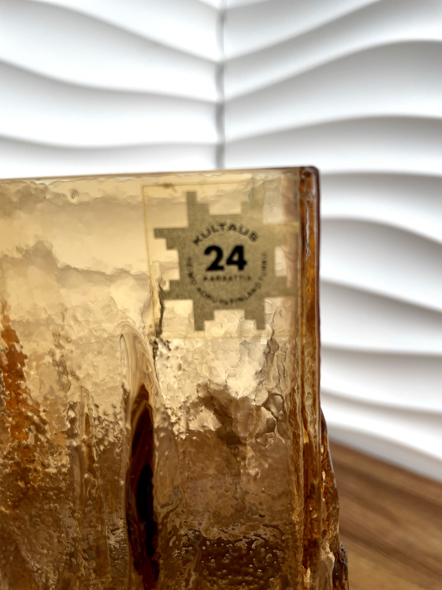
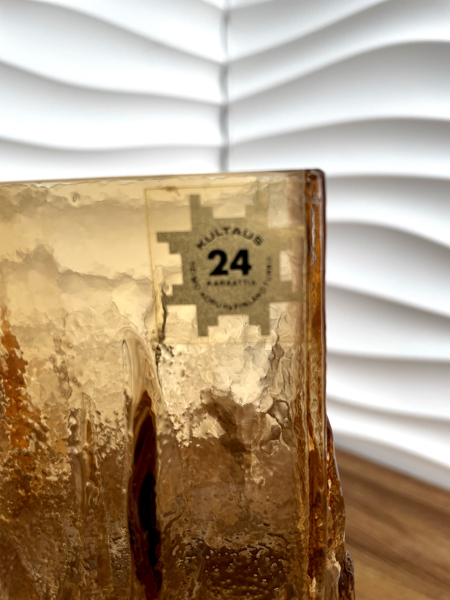

€420.00
A striking Textured Amber Glass Decanter, designed by the renowned Wayne Husted for Stelvia in the 1960s. This elegant mid-century piece showcases Husted’s iconic eye for bold form and subtle detail. The surface is richly textured with a ribbed design that catches and reflects light beautifully, highlighted by a warm amber hue that gives depth and sophistication. Its sculptural presence makes it not only a functional vessel but also a collectible statement piece, perfect for lovers of modernist glassware and vintage design.
Height: 27 cm
Diameter: 14 cm
Condition: Excellent vintage condition, no chips or cracks.

 



€150.00
An elegant amber glass vase with golden decorative details, this piece is a testament to refined mid-century artistry. Its smooth, fluid lines highlight expert craftsmanship, while the deep amber tones evoke warmth, luxury, and timeless style. The textured golden accents add a subtle touch of ornamentation, elevating it beyond simplicity into a sophisticated decorative object. Perfect as a standalone statement piece, this vase also complements a range of interiors — from minimal modern spaces to richly layered vintage collections. Whether placed on a sideboard, a dining table, or within a curated display of fine glassware, it brings depth, charm, and an aura of quiet elegance.
Dimensions: 16 × 9 cm
Condition: Excellent, no chips or cracks.